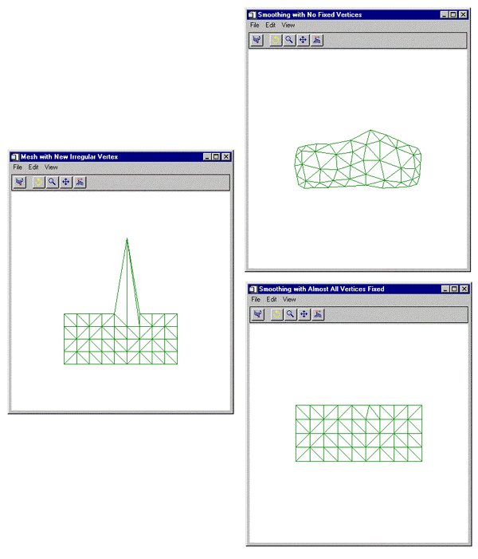

The MESH_SMOOTH function performs spatial smoothing on a polygon mesh. This function smooths a mesh by applying Laplacian smoothing to each vertex, as described by the following formula:
where:
|
|
is vertex i for iteration n |
|
λ |
is the smoothing factor |
|
M |
is the number of vertices that share a common edge with x i n . |
Result = MESH_SMOOTH ( Verts , Conn [, ITERATIONS = value ] [, FIXED_VERTICES = array ] [, / FIXED_EDGE_VERTICES ] [, LAMBDA = value ])
The output of this function is resulting [3, n ] array of modified vertices.
Input array of polygonal vertices [3, n ].
Input polygonal mesh connectivity array.
Number of iterations to smooth. The default value is 50.
Set this keyword to an array of vertex indices which are not to be modified by the smoothing.
Set this keyword to specify that mesh outer edge vertices are not to be modified by the smoothing.
Smoothing factor. The default value is 0.05.
This example smooths a rectangular mesh containing a spike. First, we create a rectangular mesh made up 10 columns and 5 rows of vertices. The vertices are connected with right triangles. The mesh is placed in a polygon object, which is added to a model object. The model is displayed in the XOBJVIEW utility. The XOBJVEW utility allows you to click-and-drag the polygon object to rotate and translate it. See XOBJVIEW for more information on this utility.
When you quit out of the first XOBJVIEW display, the second XOBJVIEW display will appear. The center vertex of the top row is displaced in the y-direction. This displacement causes the center of the top to spike out away from the mesh. After you quit out of the second display, the third display shows the result of smoothing the entire mesh. The final display shows the results of smoothing the spike with all the other vertices fixed.
The example is split into multiple segments; click on each segment to enter the code at the IDL command prompt.
; Initialize mesh size parameters.
nX = 10
nY = 5
; Initialize the x coordinates of the mesh's vertices.
xVertices = FINDGEN(nX) # REPLICATE(1., nY)
PRINT, 'xVertices: '
PRINT, xVertices, FORMAT = '(10F6.1)'
; Initialize the y coordinates of the mesh's vertices.
yVertices = REPLICATE(1., nX) # FINDGEN(nY)
PRINT, 'yVertices: '
PRINT, yVertices, FORMAT = '(10F6.1)'
; Derive the overall vertices of the mesh.
vertices = FLTARR(3, (nX*nY))
vertices[0, *] = xVertices
vertices[1, *] = yVertices
PRINT, 'vertices: '
PRINT, vertices, FORMAT = '(3F6.1)'
; Triangulate the mesh to establish connectivity.
TRIANGULATE, xVertices, yVertices, triangles
trianglesSize = SIZE(triangles, /DIMENSIONS)
polygons = LONARR(4, trianglesSize[1])
polygons[0, *] = 3
polygons[1, 0] = triangles
PRINT, 'polygons: '
PRINT, polygons, FORMAT = '(4I6)'
; Derive connectivity from the resulting triangulation.
connectivity = REFORM(polygons, N_ELEMENTS(polygons))
; Initialize a model for the display.
oModel = OBJ_NEW('IDLgrModel')
; Initialize a polygon object to contain the mesh.
oPolygon = OBJ_NEW('IDLgrPolygon', vertices, $
POLYGONS = connectivity, COLOR = [0, 128, 0], $
STYLE = 1)
; Add the polygon to the model.
oModel->Add, oPolygon
; Display the model.
XOBJVIEW, oModel, /BLOCK, $
TITLE = 'Original Mesh'
; Introduce an irregular vertex by drastically changing
; a single y coordinate.
vertices[1, 45] = 10.
; Update polygon with new vertices.
oPolygon->SetProperty, DATA = vertices
; Display change.
XOBJVIEW, oModel, /BLOCK, $
TITLE = 'Mesh with New Irregular Vertex'
; Smooth entire mesh to reduce the effect of the
; irregular vertex.
smoothedVertices = MESH_SMOOTH(vertices, connectivity)
; Update polygon and display results.
oPolygon->SetProperty, DATA = smoothedVertices
XOBJVIEW, oModel, /BLOCK, $
TITLE = 'Smoothing with No Fixed Vertices'
; Determine which vertices should be fixed. Basically,
; all of the vertices should be fixed except for the
; irregular vertex.
fixed = LINDGEN((nX*nY) - 1)
fixed[45] = fixed[45:*] + 1
; Smooth mesh with resulting fixed vertices.
smoothedVertices = MESH_SMOOTH(vertices, connectivity, $
FIXED_VERTICES = fixed)
; Update polygon and display results.
oPolygon->SetProperty, DATA = smoothedVertices
XOBJVIEW, oModel, /BLOCK, $
TITLE = 'Smoothing with Almost All Vertices Fixed'
; Cleanup object references.
OBJ_DESTROY, [oModel]
The results for this example are shown in the following figure: the spiked mesh (left), and the two smoothed meshes (right).
|
 |
|
5.5 |
Introduced |
MESH_CLIP , MESH_DECIMATE , MESH_ISSOLID , MESH_MERGE , MESH_NUMTRIANGLES , MESH_OBJ , MESH_SURFACEAREA , MESH_VALIDATE , MESH_VOLUME